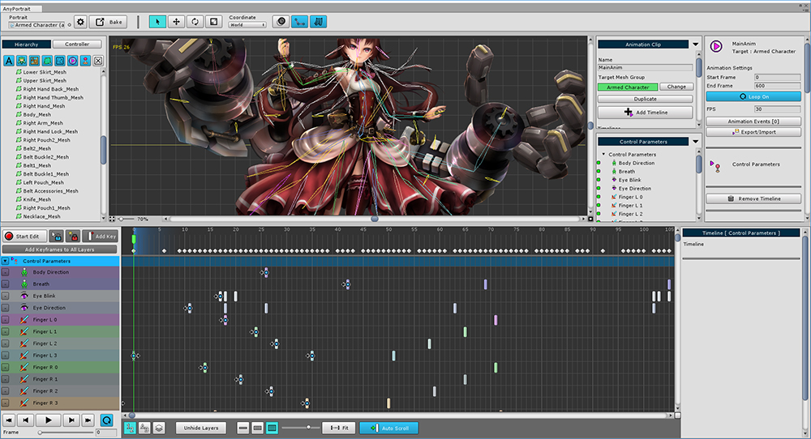
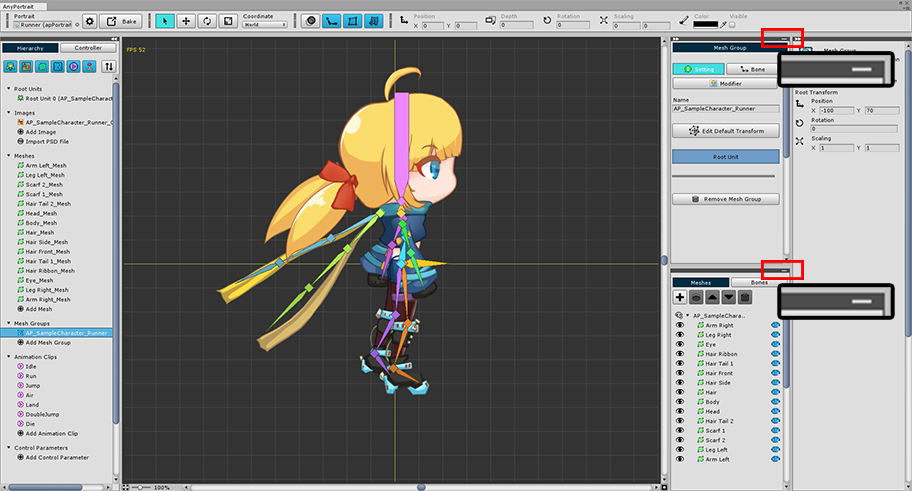
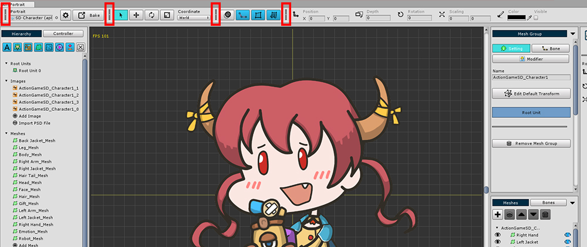
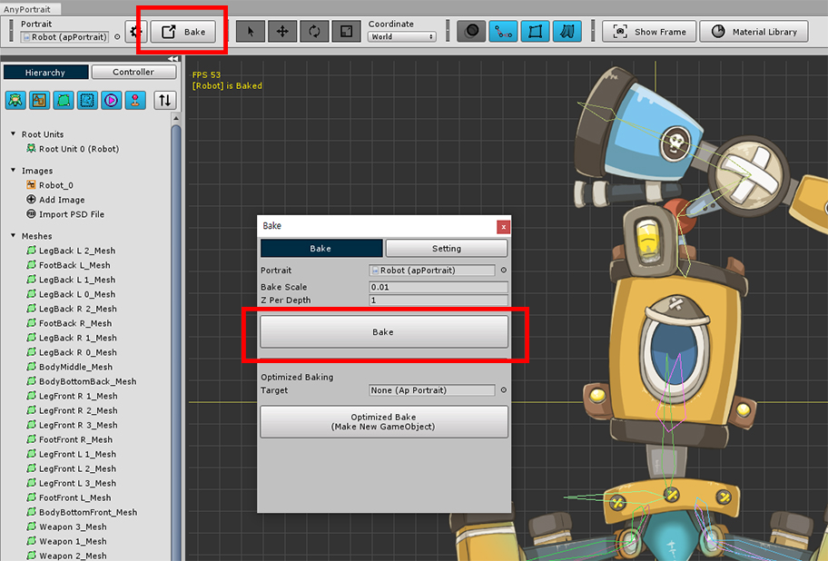

AnyPortrait > マニュアル > ワークスペース、アニメーションUI
ワークスペース、アニメーションUI
1.2.2

このページでは、ワークスペースや他のUIを使いやすく制御する方法について説明します。
不要な情報を隠すことで、作業の効率を上げることができます。
ワークスペースを最大化

左と右のUIを非表示にするには、ワークスペースの左下にある小さなボタンを押します。
アニメーションの作成の性質上、タイムラインは消えません。
これは、アニメーション画面だけでなく、すべてのメニューで利用できます。
(ショートカット: Alt + W )
タイムラインのUIサイズ

画面下部のアニメーションタイムラインのUIサイズは、3段階で調整できます。
切り替えるには、画面下部の3つのボタンを使用します。


オブジェクトを編集して選択するときにタイムラインUIを小さくし、キーフレームを編集するときにタイムラインUIを拡大すると便利です。
タイムラインレイヤーを非表示に

タイムラインのレイヤーが多いと、表示が不快になります。
タイムラインレイヤーの左側にある小さなボタンをクリックして非表示にすることができます。
「Unhide Layers」ボタンを押すと、非表示のタイムラインレイヤーがすべて表示されます。
左と右ののUIを非表示に

1.1.8
作業空間の両方のUI は,作業中にはしばしば必要ない場合があります。
上記で説明された「ジョブ空間の最大化」と異なる方法で,ユーザは左,または右側のUIだけが選択的に隠せます。
v1.1.8から左と右のUIの上段に「◀◀」形のボタンと灰色のバーが追加されました。

「◀◀」の形のボタンを押すと,UIを左右に隠したり,再び見えるようにすることができます。
ボタンだけでなく,灰色のボタンを押しても隠されたUIがふたたび現れます。

メッシュグループやアニメクリップを選択すると、右側のUIには、上の画像のように「 - 」の形のボタンが追加されます。

「 - 」の形のボタンを押すと、そのUIが隠されて、上部または下部の他のUIの領域が広くなります。
隠されたUIの「 - 」ボタンの形は「□」の形に変わり、このボタンをもう一度押すと、元の大きさに戻ります。

上の画像のように、自分に合うようにUIを調整して効率的な作業をすることができます。
画面のトップUI

1. 設定と「Bake」 : エディタとapPortraitの設定を変更する
2. 選択ツールと変形ツール : オブジェクトを選択、移動、回転、またはサイズ調整できるツールです。(ショートカットキー： Q、W、E、R )
3. 残像(Onion Skin) : 残像を切り替えます。現在の状態を残像として記録することができます。(ショートカットキー：O) Ctrl を押しながらクリックすると、詳細設定が表示されます。
4. 骨を表示/非表示 : 骨を出力する3つの方法を切り替えます。「色が満たされ見え」、「アウトラインのみ表示」、「隠す」(ショートカット： B )
5. メッシュの表示/非表示 : メッシュの表示/非表示を切り替えます。
6. フィジカルエフェクトのオン/オフ : 物理エフェクトのオン/オフを切り替えることができます。
7. オブジェクトプロパティ : 編集中のオブジェクトの位置、回転、サイズ、色が表示されます。 これらはオブジェクトによって少し異なります。


各ツールグループは、画面の上部に隠すことができます。
ツールグループ内の区切り記号をクリックすると、ツールは非表示になります。
折り畳まれたセパレータをクリックすると、再びツールグループが表示されます。
追加された機能のアニメーションUI

1. 自動キーフレーム : この機能がオンのときにオブジェクトを変更すると、キーフレームが自動的に作成されます。

1.2.2
Ctrl （Mac OSでは Command ）と Shift を押しながらタイムラインUIの上部の空きスペースをクリックすると、タイムスライダがその場所に直接移動します。